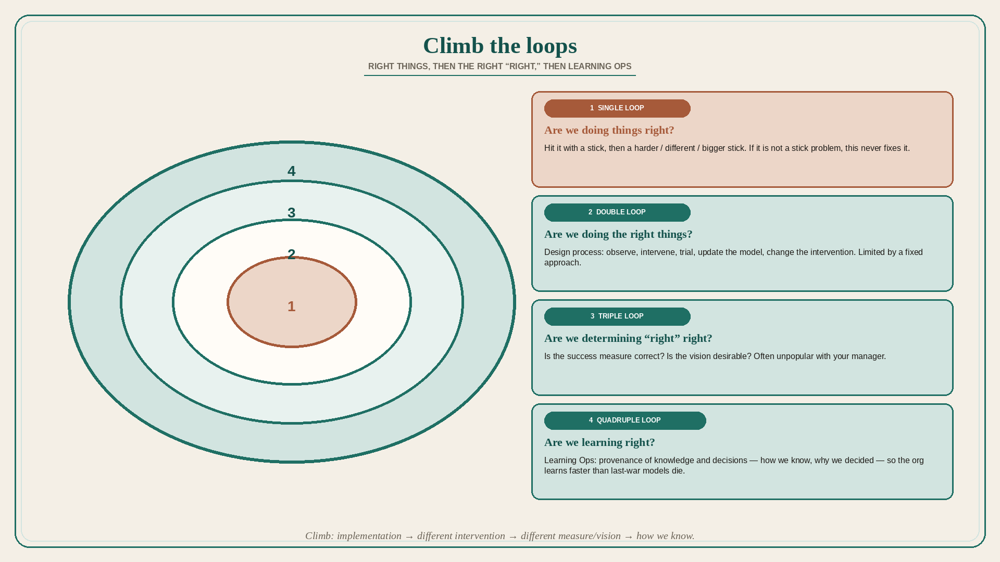

Climb the loops: right things, then the right “right,” then Learning Ops
Source: Pavel A. Samsonov (@PavelASamsonov)
original post
What it claims
Feedback loops come in flavors: single-loop learning asks “are we doing things right?”; double-loop asks “are we doing the right things?”; triple-loop asks “are we determining ‘right’ right?”; quadruple-loop asks “are we learning right?” Single-loop is hitting the problem with a stick, then a harder/different/bigger stick; if the problem has no stick-hitting solution, single-loop will never fix it. Double-loop is what we usually mean by the design process: observe the problem, conceive an intervention, trial it, update the model, change the nature of the intervention — and is limited by a fixed approach to the problem. The third loop asks whether we are measuring success correctly and whether the vision we are driving toward is a desirable vision for us — and is often not very popular with your manager. The fourth loop is Learning Ops: learning how to learn; it examines the org’s ability to learn continuously, frequently, and effectively, and incorporates political contexts to reduce obstacles. One way it accelerates the loop is examining provenance of knowledge and decisions — how we know, and why we decided — so the org does not wait for individual mental models to stop “fighting the last war.” Samsonov imagines a fifth loop on modes of knowledge: is thinking entangled in a colonialist approach to knowing; are the right people included not only as subjects of observations but as decision-makers; are we causing negative externalities, and for whom?
Why it matters for a PO
Most sprint “learning” is single-loop: the story failed, so write a bigger story. Double-loop is discovery. Triple-loop is the PO asking whether the PI success metric and the vision are even the right destination — the question managers often do not want. Quadruple-loop is inspecting how the train learns (who decided, from what evidence) instead of waiting for last-war mental models to die.
3 takeaways
- Bigger-stick delivery never fixes a problem that is not a stick problem.
- Design/discovery is double-loop; asking whether the vision and the measure of “right” are desirable is triple-loop.
- Learning Ops (provenance of knowledge and decisions) is how the org learns faster than individuals unlearn.
Practice this week
Pick one stuck item. Label the last three changes as loop 1 (implementation), 2 (different intervention), 3 (different success measure/vision), or 4 (how we know). If all three are loop 1, write one loop-3 question and one provenance question (“how do we know / why did we decide”) before the next refinement.